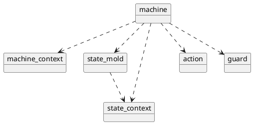

The various objects of a program that uses Maki depend on each other like so:

Dependency Between Maki Objects
If you ever want to call maki::machine::process_event() from, say, an action, you'll have a circular dependency.
There are two ways you can solve this issue.
Using a Template
Just use a template or a generic lambda:
{
mach.process_event(some_other_event{});
});
Pros:
- It's straightforward.
- It's zero-cost.
Cons:
- It forces you to write code into header files.
Using a maki::machine_ref
maki::machine_ref is a type-erasing wrapper for a reference to a mutable maki::machine.
- Note
- In C++, type erasure is the process of storing an object into a container whose type doesn't expose the exact type of the object.
Since maki::machine_ref doesn't expose the type of the machine, it breaks the circular dependency.
using my_machine_ref_t = maki::machine_ref_e<my_event, my_other_event>;
constexpr auto my_action =
maki::action_m([](
const my_machine_ref_t mach)
{
mach.process_event(my_event{});
});
constexpr auto my_other_action =
maki::action_m([](
const my_machine_ref_t mach)
{
mach.process_event(my_other_event{});
});
Pros:
- It allows you to write function bodies into implementation files.
Cons:
- You have to manually list the event types you need to process.
- It induces an extra cost due to the type erasure mechanism. It involves function pointers, which prevent the compiler from inlining.
 1.14.0
1.14.0